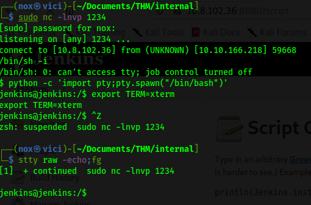

This is my write-up on one of the hard difficulty TryHackMe box called Internal. In this write-up, I want to show my perspective on how I solved this machine. You can also read this write up on my medium page (https://ardiandanny.medium.com/tryhackme-internal-writeup-d2e82acccf6f). Okay, let us dive into the write-up.
Enumeration
First, let's start with our initial NMAP Scan.
NMAP found two-port 80 HTTP and 22 SSH. So this box should only contain some web enumeration and then foothold. Opening the web in the browser, we will only get an apache default page. Nothing interesting on that page, and there's no hidden stuff in it. I decided to do some directory brute forcing with gobuster, and since this is a hard difficulty box, I decided to do some subdomain brute-forcing with WFUZZ.

WFUZZ found nothing, and gobuster found some directory. There is a PHPMyAdmin page, and a directory called WordPress, indicating that this website runs WordPress.
Visiting the directory confirmed that it's a WordPress site.
Foothold
Knowing it's a WordPress site, I immediately run a wpscan against it.
The first scan found nothing interesting, except an outdated theme being use. So I decided to run the second scan to enumerate users.
The second scan found one valid user called admin. I've been dealing with Wordpres a lot of time, so I know the next step is probably to brute force the password. While brute-forcing, you can try some default WordPress admin credentials, but none will work.
Indeed, I managed to find the admin password. Now I can log in to the admin panel, and the first thing I do is edit the index.php template and add a PHP reverse shell inside it. I open a Netcat listener and re-visit the browser.
To my surprise, it immediately worked. I thought there would be some twist, etc. Thank god there's none. Anyway, we managed to gain our foothold.
Stabilize our shell and let's press on to the next phase.
Horizontal Privilege Escalation
We got inside as a www-data user, and there's another user called aubreanna. As www-data, we should always enumerate /var/www, and knowing it's a WordPress site, there's a particular file that we should always check. Yep, wp-config.php. I immediately look inside it and managed to find the database credential.
So, let's enumerate the database.
Nothing useful inside the database. Except for the admin credential, which we already know. Meh. I spent quite some time trying to find a way to get the aubreanna user. I check every file in the WordPress directory, but nothing is interesting. We are not allowed to cd to /home/aubreanna. I visit /tmp online to find some useless picture, even trying to do some steganography on it. I run ip addr and realize there must be a docker service running, and I also did a bunch of stuff, until I came across the /opt folder. This is our gold mine. There's a note file that contains aubreanna credentials.
Let's su to aubreanna and get our user flag.
Vertical Privilege Escalation
Inside aubreanna's home directory there's a file called jenkins.txt which give us a clue.
It told us that there's a Jenkins service running on 172.17.0.2:8080. Checking netstat confirms it.
I have dealt with Jenkins before, so I know it's some kind of a DevOps CMS stuff. Remember, I discovered that there's a docker service running? Looking inside the snap folder confirmed it. So the Jenkins service runs inside a docker container which, we can access.

There's also .sudo_as_admin_successful file which tells me that we must get to root from aubreanna.
From experience from another box (Unbaked Pie), I immediately know in my mind what to do. I can use chisel to port forward the Jenkins service, so I can access it locally from my machine. So that's what I do. First, I open a chisel server.
Then, I connect the service I want from the target machine.
And, Boom! We can access the Jenkins service from our machine.
This is where I overthink, and I tripped myself. I enumerate the Jenkins service, I tried to look for hidden things, I tried to brute-force the directory, I tried default credentials, and everything. Based on my googling, I know that Jenkins should have an admin user, but I didn't think that we should brute-force the credentials. So I stepped back. I thought like "This Jenkins service must be a trap or a rabbit hole. Why should we go inside a container when we already have the real machine?". I remembered that we should get the root user from aubreanna because of the .sudo_as_admin_successful file. I decided to step back and enumerate everything again. I check things like Capabilities, SUID, cronjobs, and so much stuff. Aubreanna can't use sudo. I used LinPeas, PSPY, but nothing seems to be fruitful. LinPeas even misleads me even more because of the false-positive results. I'm starting to get tired, and I can't think properly.
.
.
.
Time passes, I decided to step back again and think "If the creator gave that Jenkins service straight at our face, the answer must be there". Then, I realize I haven't done one thing. I forgot to brute-force the login page. Immediately I did that, yep. Lesson learned, do not overthink. Your brain is your rabbit hole when you are overthinking.
Finally, we can get inside the Jenkins Service. Like I previously mentioned, I have worked with Jenkins service before, so I know that we can use Jenkins console to gain reverse connection. So, I immediately did that.
And yes, as expected.

Immediately stabilize our shell and continue the enumeration in this docker container. There's lots of stuff and files with secrets on it.
At this point, I was so tired. I went to a random folder like /tmp and /opt, and to my surprise, the answer is there!
I was so happy, and immediately rooted the box.
Thoughts
I'm proud of myself because I managed to solve this hard difficulty machine by myself. This room teaches me a lot about the importance of enumeration and not giving up, and of course, DO NOT OVERTHINK! It also showed me that all of my practice and experience are useful, and nothing goes to waste. I know I still have to learn a lot of things until I'm able to achieve my goal. So, I won't stop learning.
Thank you for reading this write up. I really appreciate it! I would love to hear some feedback so that I can improve and write a better write up.
Happy Hacking!